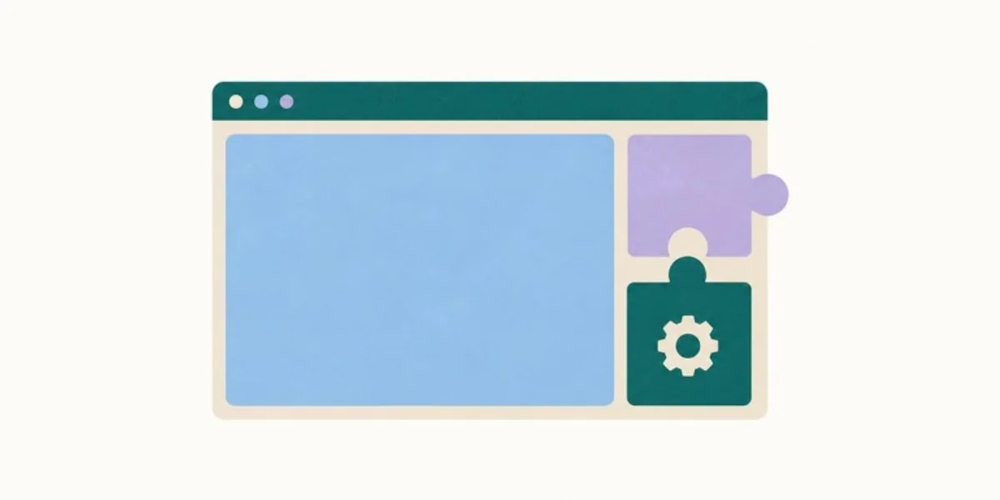
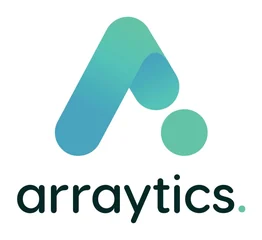
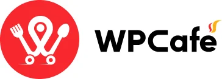
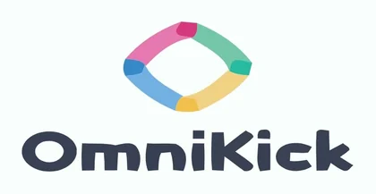
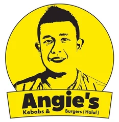
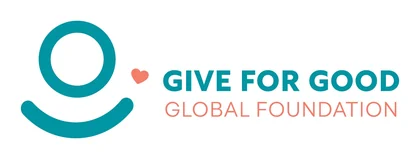
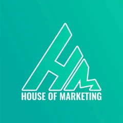
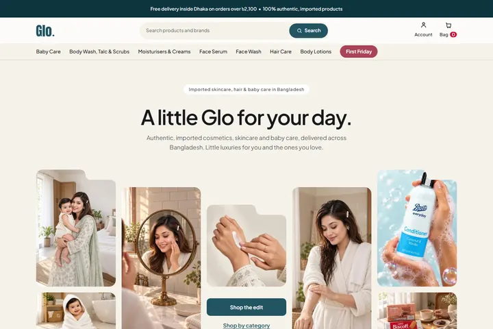
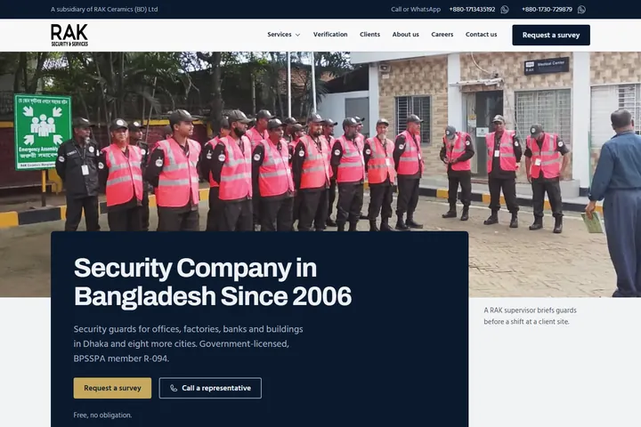

WordPress
Plugin launches, readmes and repository pages, plus a 39-brand Black Friday roundup.
View case study →Iftekhar A. Samir · Senior Content Marketing Strategist
A 7-year content marketing veteran with hands-on skills in content optimization, brand style, AI SEO + GEO, content strategy & creation, GTM strategies and more.
I've worked inside agencies and product teams for 50+ brands: WordPress plugins, a home builder in Scotland, a fashion label, even the Bangladesh Air Force Museum.
These days I live where search meets AI. Think SEO, keyword research and GEO, which is all about making sure AI tools say the right things about your brand.
Along the way I picked up a HubSpot content marketing certification, a Sync Leader Award (2024) and a Team Leader Award (2022).
WordPress, SaaS, social media, web analytics and rebranding. Here's what I get up to in each.

Plugin launches, readmes and repository pages, plus a 39-brand Black Friday roundup.
View case study →Bilingual posts for restaurants, fashion and the Air Force. Campaigns for 20 brands.
View case study →GA4, Search Console, Tag Manager, ranking reports and AI citation tracking.
View case study →For two months I've been building websites with AI. I plan, design, code, test and launch them, then do the SEO. Two client builds so far.
An imported beauty store in Dhaka. Designed in Framer, rebuilt as a custom WordPress theme, with SEO, GA4, Steadfast and Apps Script wired in.
A Dhaka security company founded in 2006. A 35-page redesign, plus on-page, off-page and technical SEO, GEO and AEO.
Plugin companies, restaurants, agencies, a fashion label and an air force museum. Here are a few of them.






A few of the 50+.
Selected work
A few highlights first, then three projects worth a closer look.
Plus social strategy for 5+ brands in Australia and Bangladesh.
University students in the ClassRoom Activator programme
Dissertations and assignments written, 3,000–5,000 words each
Source: CV.
Two platforms, two crowds: honest maker talk for Product Hunt, deal copy for AppSumo, plus the landing page and newsletters.
Source: CV, Arraytics period.
Read the case study →A blog where every post is written for two readers: Google, and the AI tools people now ask instead.
Three price guides for Dhanmondi, Gulshan and Mirpur. Written for people about to buy, and built to win Google's featured snippets.
The range each guide covered, in BDT.
| Area | Low (BDT/sq ft) | High (BDT/sq ft) |
|---|---|---|
| Dhanmondi | 14,000 | 30,000 |
| Gulshan | 17,000 | 28,000 |
| Mirpur | 6,000 | 10,000 |
Source: the 2026 price guides on angan.com.bd.
Web builds, social, SEO, launches, positioning and AI search. Each one covers the problem, the plan, what I did and how it went.
Pick a bar or a filter to narrow the list.

A beauty store designed, coded, tracked and optimised with AI coding agents.
View case study →
A security company site rebuilt for Google, the map pack and AI answers.
View case study →Bengali and English posts for a rooftop restaurant that hosts weddings and events.
View case study →Food stories for a Turkish and Bengali kebab spot with two Dhaka branches.
View case study →Recruitment campaigns and museum promos for two official Air Force pages.
View case study →Brand copy, storyboards, scripts and photo direction for a luxury fashion label.
View case study →Getting people to Open Studios 2025 for a network of Scottish artists.
View case study →Local SEO and web copy for two builders in a small Scottish town.
View case study →Flat price guides for three Dhaka areas, written for people about to buy.
View case study →Blog posts built to rank on Google and get quoted by AI tools.
View case study →Audits, ranking reports and a keyword gap hunt, all in four layers.
View case study →Four posts that pointed a scheduling plugin at gyms and trainers.
View case study →One AI scheduling tool, two launches, two very different crowds.
View case study →A new homepage and a sharper WordPress.org listing for an events plugin.
View case study →Everything a big release needs: launch post, v3 vs v4 comparison, 62 screenshots and more.
View case study →Comparison pages that put Timetics next to Calendly, Trafft and Appointlet.
View case study →One product, two ways to buy it, and a landing page that explains both.
View case study →One reusable playbook for Black Friday, Holiday, Ramadan and Summer deals.
View case study →Reading competitors through their changelogs to see what they ship, and when.
View case study →Ten roles since 2015, in Dhaka and remote.
| Company | Role | Dates | Where |
|---|---|---|---|
| Glo Little Luxury, RAK Security | Freelance AI Development & SEO Strategist | Jul 2026 – Present | Remote |
| Techabyte Solutions | Content Strategist (Contract) | Nov 2025 – Jun 2026 | On-site, Dhaka |
| Connect2build Scotland | Freelance SEO Strategist | Dec 2024 – Oct 2025 | Remote |
| Woooplugin | Content Marketing Associate (Contract) | Sep 2024 – Nov 2024 | Remote |
| Arraytics | Senior Content Writer | Mar 2023 – Aug 2024 | On-site, Dhaka |
| Markosis Australia | Senior Copywriter & Brand Planner | Dec 2020 – Feb 2023 | Remote |
| ClassRoom Ltd. | Project Manager | Apr 2018 – Feb 2020 | On-site, Dhaka |
| OmniKick Corp. | Junior Content Marketing Executive | Jul 2017 – Apr 2018 | On-site, Dhaka |
| Prime Research And Consultancy Center | Researcher & Academic Writer | Feb 2016 – Jul 2017 | Remote |
| Durbin Labs Ltd. | Contract Employee | May 2015 – Jan 2016 | On-site, Dhaka |
What I did at each stop, in a few bullets.
Recognition
Self-assessed, out of 5.
The questions people ask me most.
That's me. I'm a content marketing strategist from Dhaka, Bangladesh, with 7 years in the game. I rank content, create designs and build websites, mostly for SaaS and WordPress brands. Some people know me as Samir in Marketing.
GEO, or generative engine optimization, means shaping your content so AI tools like ChatGPT, Perplexity and Google's AI Overviews can find it, trust it and quote it. More people now ask AI instead of searching, so being the source it cites matters. Here's how I did it at Techabyte.
SEO and GEO, content strategy and writing, brand style, landing pages and go-to-market launches. I've done it for 50+ brands, from WordPress plugins to restaurants to the Bangladesh Air Force Museum.
Yes. I've worked remotely with brands in Scotland and Tasmania, Australia, as well as at home in Bangladesh.
Nothing. Book a call and tell me what you're working on. Quick advice is on me, and you only get an invoice if it turns into paid work.
Book a call
No budget? No problem. Tell me what you're working on. If it turns into paid work, you'll get an invoice. If it's quick advice or a small fix, it's on me.
Got a question, an idea or a project? I'd love to hear about it.